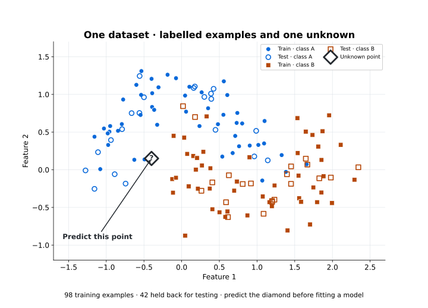
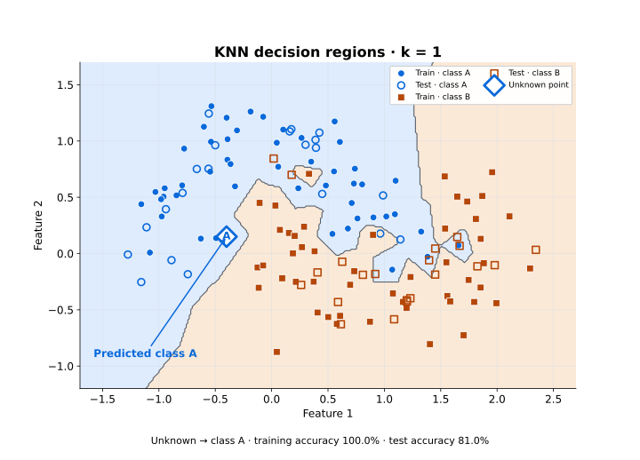
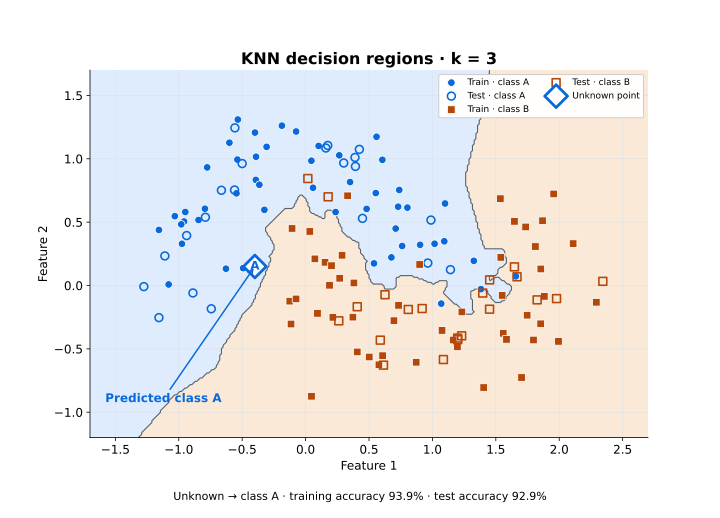
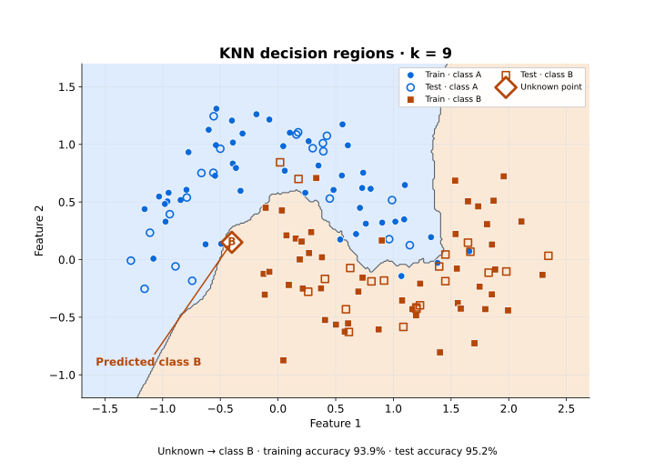
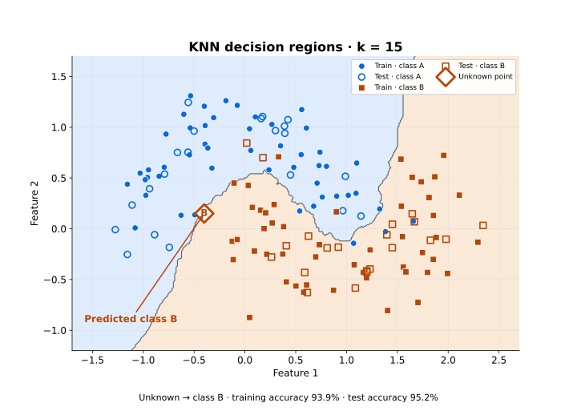
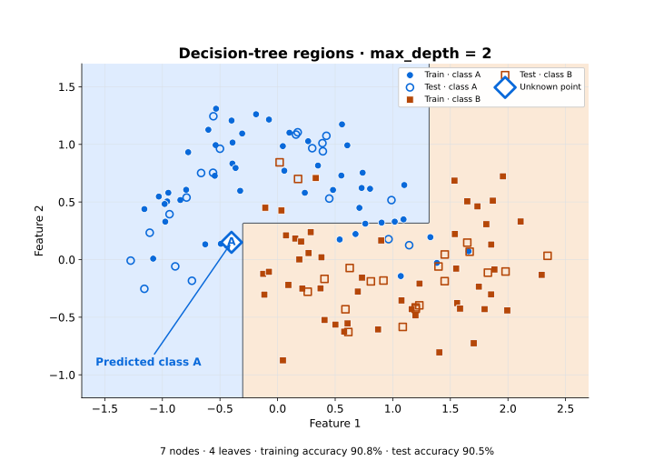
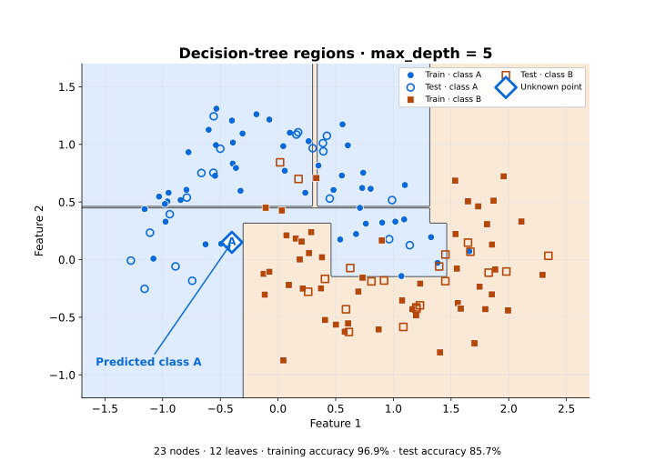
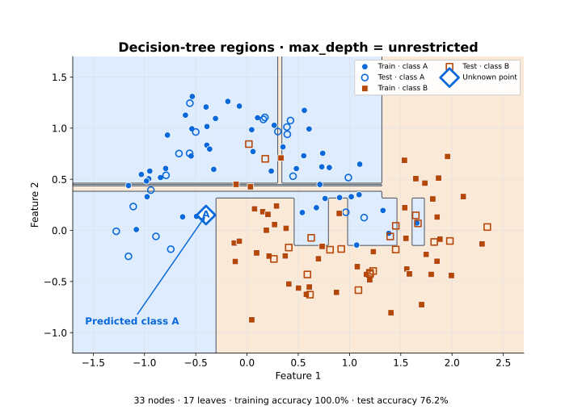
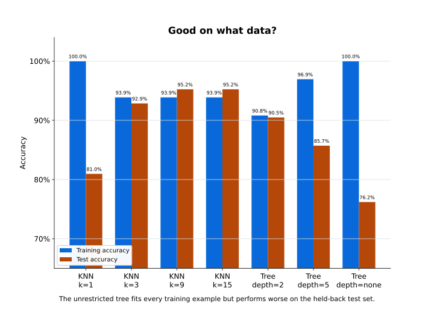

CT319 Artificial Intelligence · Week 9 · Classification
Week 9 — Classification
How can a machine decide which category a new example belongs to?
Last week introduced machine learning in general. This week we focus on one kind: learning from labelled examples, where we already know the right answer for every past case. The question is how those known answers help the machine predict the category of a new case.
How can a machine decide which category a new example belongs to?
Only one thing changes at a time. So when a picture changes, you can say exactly what caused it.
All the experiments this week use the same dataset, the same split into training and test data, the same axes and the same unknown point.
This week covers five topics:
- From examples to categories — what a classification task is, when every training example already has its answer.
- Ask the neighbours — how KNN predicts by looking at the labelled examples closest to a new case.
- Learn the rules instead — how a decision tree learns a series of questions instead of keeping the examples.
- Good on what data? — why a high score on the training examples proves nothing by itself.
- Representation first — what the algorithm actually receives once a customer, an email or a photo has been turned into features.
Keep three ideas separate as you read:
We use two algorithms this week. On the same data, they give different answers, and understanding why is the main lesson.
From examples to categories — what are we asking the machine to learn?
Classification is a supervised learning task. That means every training example comes with its correct answer.
Suppose a bank has records of past customers, and it knows whether each one repaid their loan:
| Income (€k) | Savings (€k) | Repaid? |
|---|---|---|
| 31 | 4 | No |
| 36 | 7 | No |
| 48 | 14 | Yes |
| 55 | 18 | Yes |
| 63 | 24 | Yes |
Each row is an example. Income and Savings are features: the measurements we chose to describe each customer. Repaid? is the class label: the answer we want the classifier to predict.
Now a new customer applies. We know their features, but the answer is missing:
| Income (€k) | Savings (€k) | Repaid? |
|---|---|---|
| 46 | 12 | ? |
The classifier does not know the answer. It has to work it out from what the past examples showed it.
Given the features of a new example, predict its class.
The task works the same way in both cases. Only the number of possible answers changes.
Binary and multiclass
Sometimes there are only two possible classes: spam or not spam, fraud or not fraud, approve or reject. This is binary classification. Sometimes there are more: cat, dog or rabbit; red, amber or green. This is multiclass classification.
The dataset everything else runs on
For the experiments, we switch to a dataset with two features, so every example can be drawn as a point on a flat plot.
The loan table is useful for learning the vocabulary. The dataset is generated the same way every time, so the results never change between runs:
make_moons(n_samples=140, noise=0.23, random_state=2)It has 140 points. Each has two numerical features on similar scales and is labelled A or B. The diamond is the unknown point, at [-0.4, 0.15].

Which class would you give the diamond — and what evidence did you just use?
Decide on your answer before running any model. Then think about how you decided. You probably looked at which points are close to the diamond. That is exactly the idea behind the first algorithm.
Why this matters this week
From here on, we change one thing at a time and compare against this picture: first how many neighbours the algorithm looks at, then which algorithm we use, then how much of the data it is allowed to see.
Ask the neighbours — how does KNN make a decision?
The method is simple: find the k nearest examples, look at their classes, and let them vote.
k-nearest neighbours, or KNN, predicts the class of a new example by looking at the labelled examples closest to it.
k = 3, three labelled examples vote and the rest take no part. Two of them are A, so the prediction is A. Diagram created for these pages; no external image licence is used.Nobody wrote any rules in advance. The prediction depends only on which labelled examples happen to be nearest.
What does nearest mean?
To measure "nearest", each example has to be described by features. If both features are numbers, each example becomes a point, and KNN measures the distance between points. For two numerical features the usual choice is Euclidean distance: the ordinary straight-line distance.
The computer does the arithmetic. What matters for us is the consequence:
KNN relies on the geometry of the representation we chose.
KNN treats two examples that are close together as similar. So how we represent the data decides which examples count as similar, and that can cause problems.
Is distance always meaningful?
Suppose a customer is described by age = 37 and income = 75000. Income is measured in much bigger numbers than age. So when KNN calculates a distance, income almost completely decides it. That is not because income matters more. It is only because of the units it happens to be recorded in.
A distance can be dominated by one feature simply because of the units it was recorded in.
In this week's dataset both features use similar scales, so this problem does not affect our experiments. With real data it often does. Then the features have to be rescaled, and choosing how to scale them is part of choosing the representation.
k change?What does k change?
k is the number of neighbours that get a vote. With k = 1, the single closest example decides. With k = 15, fifteen examples vote, so a much larger area around the new point affects the answer.
Before running anything, make a prediction:
Will changing
kleave the prediction unchanged?
In scikit-learn, KNN takes three lines of code:
from sklearn.neighbors import KNeighborsClassifier
model = KNeighborsClassifier(n_neighbors=3)
model.fit(X_train, y_train)
prediction = model.predict(X_new)The code is the easy part. What matters is how the results change. Everything stays the same (the data, the split, the axes and the diamond) except k.
k change?k = 1 — one example decides | k = 3 — three vote |
|---|---|
 |  |
| Training 100.0%, test 81.0%. Diamond → A | Training 93.9%, test 92.9%. Diamond → A |
Figure 3. At k = 1 every training example gets its own small territory, which is why training accuracy is perfect and test accuracy is the worst of the four. Plots created for these pages by the classification demonstration; no external image licence is used.
k change?k = 9 | k = 15 |
|---|---|
 |  |
| Training 93.9%, test 95.2%. Diamond → B | Training 93.9%, test 95.2%. Diamond → B |
Figure 4. Somewhere between k = 3 and k = 9 the diamond changes class. Nothing about the diamond changed — only how many examples were allowed to speak about it. Plots created for these pages by the classification demonstration; no external image licence is used.
k change?Notice that the diamond's predicted class changes between
k = 3andk = 9.
Here are all four results together.
k | Training accuracy | Test accuracy | Diamond |
|---|---|---|---|
| 1 | 100.0% | 81.0% | A |
| 3 | 93.9% | 92.9% | A |
| 9 | 93.9% | 95.2% | B |
| 15 | 93.9% | 95.2% | B |
With a very small k, the prediction depends heavily on single examples, so one unusual point can change the answer. A larger k smooths this out. But bigger is not always better: if k is too large, examples far from the new point start to affect a decision that should depend on what is nearby.
k change?Do not just read the accuracy numbers; look at the plots.
Why this matters this week
Check where the boundary between the classes moved, and which examples are now closest to the diamond. The numbers alone would not show you that the diamond's predicted class changed.
Learn the rules instead — what does a decision tree do differently?
A decision tree learns a series of yes/no questions during training.
KNN keeps all the training examples and looks at them every time a new case arrives. There is another approach. After that, it only needs to follow those questions to classify a new case.

Lazy and eager learning
There are standard names for this difference: lazy learning and eager learning.
Neither one is better. The names describe when the work is done, and what has to be stored afterwards.
What if we let the tree keep growing?
A small tree with only a few questions gets most of the training examples right. If we let it ask more questions, it can add very specific rules that deal with single training examples. Its training accuracy goes up. Is that a good thing?
No. This is the idea from Week 8, now with real numbers to show it:
Learning is not remembering.
The code is the same three lines as before, with a different classifier. The data stays the same; only the learning algorithm changes:
from sklearn.tree import DecisionTreeClassifier
model = DecisionTreeClassifier(max_depth=2, random_state=42)
model.fit(X_train, y_train)
prediction = model.predict(X_new)max_depth limits how many questions the tree can ask, one after another, before it gives an answer.
max_depth = 2 — 7 nodes, 4 leaves | max_depth = 5 — 23 nodes, 12 leaves |
|---|---|
 |  |
| Training 90.8%, test 90.5% | Training 96.9%, test 85.7% |
Figure 6. Deeper means more regions, and the regions are axis-aligned rectangles — a tree can only cut straight across one feature at a time. Training accuracy rises by six points while test accuracy falls by five. Plots created for these pages by the classification demonstration; no external image licence is used.
Now remove the depth limit completely.

The same data can produce different models. There is no single "correct" model hidden in the data.
If the data are identical, why do the models disagree?
Because each algorithm makes a different assumption about what the data looks like. KNN assumes that examples close together belong to the same class. A decision tree assumes the classes can be separated by straight cuts, one feature at a time.
Why this matters this week
Two algorithms, one dataset, two different answers, and neither algorithm is reading the data wrongly. Choosing the learning algorithm is a design decision, just like choosing the representation in Week 2.
Good on what data? — did the classifier actually learn?
Train a classifier on 100 examples, then ask it to predict those same 100. It gets them all right.
Those are the examples it learned from. Repeating them is not evidence of anything.
What we really want to know is how it does on examples it did not see during training. To find out, we have to set some examples aside before training starts.
Training data and test data
The standard approach is to hold back some of the labelled examples before any learning happens.
The model trains on the rest. The held-back examples are used only at the end, to test it.
from sklearn.model_selection import train_test_split
X_train, X_test, y_train, y_test = train_test_split(
X, y, test_size=0.30, random_state=42, stratify=y
)test_size=0.30 holds back 30% of the data for testing. random_state=42 makes the split the same every time, so you always get the same figures. stratify=y keeps the same mix of A and B in both parts. With 140 examples, that gives 98 for training and 42 for testing.
Keep some evidence outside the training process.
If you train on all the data, nothing is left for a fair test. The model might then look good only because it is being tested on examples it has already seen.
Overfitting, measured
The tree that memorised every training label does worst on new data, which is the job that actually matters.
A model overfits when it fits its training data so closely that it does worse on new data. On this dataset, the effect is easy to see:
| Decision tree | Nodes | Leaves | Training | Test |
|---|---|---|---|---|
max_depth=2 | 7 | 4 | 90.8% | 90.5% |
max_depth=5 | 23 | 12 | 96.9% | 85.7% |
| unrestricted | 33 | 17 | 100.0% | 76.2% |
As the tree grows, training accuracy rises all the way to 100%, while test accuracy keeps falling.

Accuracy, and where it goes blind
The simplest way to score a classifier is accuracy: the proportion of predictions it got right. If it gets 18 of 20 test examples right, its accuracy is 90%. That is useful, but it does not tell the whole story.
Imagine trying to detect something rare, where 99 out of every 100 examples belong to the same class. A system that always predicts that common class scores 99% accuracy, yet it detects none of the rare cases we actually care about.
Accuracy is a useful starting measure, not a definition of a good classifier. The evaluation has to match the problem.
The gap is the most informative of the three.
There are many other ways to measure a classifier, and we do not cover them here. The habit to take away is to ask whether the measure fits the problem.
Why this matters this week
For every model we now have three numbers: the training score, the test score, and the gap between them.
Representation first — what does the classifier actually see?
Every classifier this week has the same hidden limitation. The algorithm never sees a real customer, email, photograph or patient.
It sees the representation we gave it — and nothing else.
This brings us back to the idea of representation from Week 2.
An email is not a feature vector
A classical classifier cannot understand the meaning of that sentence. The text first has to be turned into numbers it can count.
Suppose an email says FREE tickets available in Galway tomorrow.
Both good and not good contain the word good. So if we only count single words, a positive review and a negative one can look almost the same. One fix is to also count pairs of neighbouring words: "not good" is a bigram. In general, a sequence of n neighbouring words is called an n-gram.
The specific fix matters less than the general point:
Changing the representation changes what the classifier is capable of learning — before any algorithm has been chosen.
Similarity changes too
For some kinds of data, straight-line distance is not the best way to measure similarity. When text is turned into word counts, most of the counts are zero, because any one document uses only a few of all possible words. For data like this, cosine similarity is often used instead. It compares the direction of two lists of numbers rather than the distance between them.
You do not need the formula. The important design question is:
What should count as similar for this problem?
The classifier cannot answer this question for us.
The answer is decided when we choose the representation, before the classifier ever runs.
Why this matters this week
In Week 2 we had to decide what a state was, which actions were possible and what counted as a goal. Machine learning does not take those decisions away from us. For classification, we still decide what an example is, which features describe it, what the labels mean, which data the model learns from, and how we measure success. The algorithm only works within the choices we make.
The classification demo
The dataset, the split, the axes and the unknown point stay the same throughout.
📦 classification_demo.py — shows every figure from this page, one step at a time.
python -m pip install numpy matplotlib scikit-learn
python experiments/week-09/classification_demo.pyPress Space, the right arrow or Next → to move to the next step. Each step shows a question and its measured result on the figure.
Find where the diamond changes class, and name the examples responsible.
Try it yourself
- Open
--mode dataand predict the diamond's class by eye. Say what evidence you used. - Step through
--mode knn --k 1, then3, then9, then15. Predict how the boundary will look before each one. 3. - Switch to
--mode tree --depth 2, then5, thennone. Predict whether test accuracy will rise along with training accuracy. - Finish on
--mode compareand find three things: the setting that memorised every training example, the setting with the best test score, and why training accuracy cannot tell you which is which.
To save every figure on this page as a file, without opening a window:
python experiments/week-09/classification_demo.py --save-dir media/week-09Before Week 10
Every classifier this week learned from examples that already had the correct label. Someone had already done the hard work of labelling them.
What happens when nobody gives us the labels?
That is where Week 10 begins: clustering.
Quick revision
If you can answer these without reopening the page, you have the core of this week.
- [WK-09-01] What makes classification a supervised task, and what does the learner receive that an unsupervised one does not?
- What is the difference between binary and multiclass classification, and what stays the same?
- [WK-09-02] How does KNN reach a prediction, and what does
kcontrol? - Why can changing
kalone change the predicted class of a point that has not moved? - Why does feature scale matter to KNN but not to a decision tree?
- [WK-09-03] What does a decision tree learn during training, and what does it keep afterwards?
- What do “lazy” and “eager” describe, and why is neither one better?
- [WK-09-04] Why does 100% on the training examples establish nothing, and what would establish something?
- Why does test accuracy fall as the tree is allowed to grow, while training accuracy rises?
- Give a case where 99% accuracy is evidence of a useless classifier.
- [WK-09-05] Why can a bag-of-words representation not separate “good” from “not good”, and what fixes it?
- Name three decisions a classifier cannot make for you.